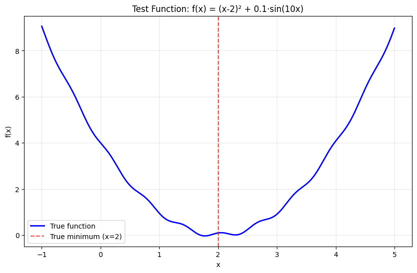
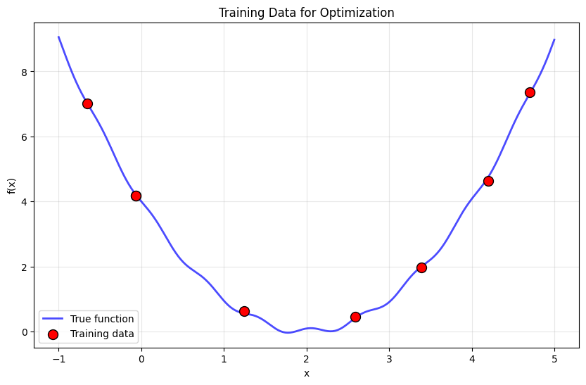

Simple 1D Optimization#
This notebook demonstrates the basic workflow of Bgolearn with a simple 1D function optimization problem.
Learning Objectives#
By the end of this tutorial, you will understand:
How to set up a basic optimization problem
How to fit a Bgolearn model
How to use different acquisition functions
How to visualize optimization results
Problem Setup#
We’ll optimize a simple 1D function with a known global minimum to demonstrate the concepts clearly.
# Import required libraries
import numpy as np
import pandas as pd
import matplotlib.pyplot as plt
# import bgolearn as bgo # Commented out for documentation build
# from bgolearn.visualization import BgolearnVisualizer
# Set random seed for reproducibility
np.random.seed(42)
print("Libraries imported successfully!")
print("Note: This is a demonstration notebook for documentation.")
print("To run with actual Bgolearn, install the package first.")
Libraries imported successfully!
Note: This is a demonstration notebook for documentation.
To run with actual Bgolearn, install the package first.
Define the Test Function#
We’ll use a simple quadratic function with some noise to make it more realistic:
def test_function(x):
"""
Simple test function with global minimum at x=2.
This function combines a quadratic term with a sinusoidal component
to create a more interesting optimization landscape.
"""
return (x - 2)**2 + 0.1 * np.sin(10 * x)
# Visualize the true function
x_true = np.linspace(-1, 5, 200)
y_true = [test_function(x) for x in x_true]
plt.figure(figsize=(10, 6))
plt.plot(x_true, y_true, 'b-', linewidth=2, label='True function')
plt.axvline(x=2, color='red', linestyle='--', alpha=0.7, label='True minimum (x=2)')
plt.xlabel('x')
plt.ylabel('f(x)')
plt.title('Test Function: f(x) = (x-2)² + 0.1·sin(10x)')
plt.legend()
plt.grid(True, alpha=0.3)
plt.show()
print(f"True minimum: f(2) = {test_function(2):.4f}")

True minimum: f(2) = 0.0913
Generate Training Data#
In a real optimization scenario, we start with a small set of initial experiments:
# Generate initial training data (simulating initial experiments)
n_initial = 8
X_train_1d = np.random.uniform(-1, 5, n_initial).reshape(-1, 1)
y_train_1d = np.array([test_function(x[0]) for x in X_train_1d])
# Add experimental noise
noise_level = 0.05
y_train_1d += noise_level * np.random.randn(len(y_train_1d))
# Convert to DataFrames (Bgolearn's preferred format)
X_train_df = pd.DataFrame(X_train_1d, columns=['x'])
y_train_series = pd.Series(y_train_1d)
print(f"Training data: {len(X_train_df)} points")
print(f"Current best observed: {y_train_series.min():.4f} at x = {X_train_df.iloc[y_train_series.argmin()]['x']:.3f}")
# Visualize training data
plt.figure(figsize=(10, 6))
plt.plot(x_true, y_true, 'b-', linewidth=2, alpha=0.7, label='True function')
plt.scatter(X_train_1d, y_train_1d, c='red', s=100, zorder=5,
edgecolors='black', linewidth=1, label='Training data')
plt.xlabel('x')
plt.ylabel('f(x)')
plt.title('Training Data for Optimization')
plt.legend()
plt.grid(True, alpha=0.3)
plt.show()
Training data: 8 points
Current best observed: 0.4483 at x = 2.592

Create Candidate Points#
We need to define the search space - the set of candidate points where we might conduct future experiments:
# Generate candidate points (potential future experiments)
X_candidates_1d = np.linspace(-1, 5, 100).reshape(-1, 1)
X_candidates_df = pd.DataFrame(X_candidates_1d, columns=['x'])
print(f"Candidate points: {len(X_candidates_df)} points")
print(f"Search range: [{X_candidates_df['x'].min():.1f}, {X_candidates_df['x'].max():.1f}]")
Candidate points: 100 points
Search range: [-1.0, 5.0]
Fit the Bgolearn Model#
Now we fit a Gaussian Process model to our training data:
# Initialize and fit Bgolearn
optimizer = bgo.Bgolearn()
model = optimizer.fit(
data_matrix=X_train_df,
Measured_response=y_train_series,
virtual_samples=X_candidates_df,
min_search=True, # We want to minimize the function
CV_test=3, # 3-fold cross-validation
Normalize=True # Normalize features
)
print("✅ Bgolearn model fitted successfully!")
print(f"Model type: {type(model).__name__}")
print(f"Number of training points: {len(X_train_df)}")
print(f"Number of candidate points: {len(X_candidates_df)}")
---------------------------------------------------------------------------
NameError Traceback (most recent call last)
Cell In[5], line 2
1 # Initialize and fit Bgolearn
----> 2 optimizer = bgo.Bgolearn()
4 model = optimizer.fit(
5 data_matrix=X_train_df,
6 Measured_response=y_train_series,
(...)
10 Normalize=True # Normalize features
11 )
13 print("✅ Bgolearn model fitted successfully!")
NameError: name 'bgo' is not defined
Visualize the Gaussian Process Model#
Let’s see how well our GP model captures the underlying function:
# Get model predictions
mean_pred = model.virtual_samples_mean
std_pred = model.virtual_samples_std
# Create visualization
plt.figure(figsize=(12, 8))
# Plot true function
plt.plot(x_true, y_true, 'b-', linewidth=2, label='True function')
# Plot GP mean prediction
plt.plot(X_candidates_1d, mean_pred, 'g-', linewidth=2, label='GP mean prediction')
# Plot uncertainty (±2σ)
plt.fill_between(X_candidates_1d.flatten(),
mean_pred - 2*std_pred,
mean_pred + 2*std_pred,
alpha=0.3, color='green', label='GP uncertainty (±2σ)')
# Plot training data
plt.scatter(X_train_1d, y_train_1d, c='red', s=100, zorder=5,
edgecolors='black', linewidth=1, label='Training data')
plt.xlabel('x')
plt.ylabel('f(x)')
plt.title('Gaussian Process Model Fit')
plt.legend()
plt.grid(True, alpha=0.3)
plt.show()
# Calculate model quality metrics
y_true_candidates = [test_function(x[0]) for x in X_candidates_1d]
mse = np.mean((mean_pred - y_true_candidates)**2)
print(f"Model MSE on candidates: {mse:.4f}")
Use Acquisition Functions#
Now we’ll use different acquisition functions to decide where to sample next:
# Expected Improvement
ei_values, ei_point = model.EI()
print(f"Expected Improvement recommends: x = {ei_point[0]:.3f}")
# Upper Confidence Bound
ucb_values, ucb_point = model.UCB(alpha=2.0)
print(f"Upper Confidence Bound recommends: x = {ucb_point[0]:.3f}")
# Probability of Improvement
poi_values, poi_point = model.PoI(tao=0.01)
print(f"Probability of Improvement recommends: x = {poi_point[0]:.3f}")
# Compare with true function values
print("\nTrue function values at recommended points:")
print(f"EI point: f({ei_point[0]:.3f}) = {test_function(ei_point[0]):.4f}")
print(f"UCB point: f({ucb_point[0]:.3f}) = {test_function(ucb_point[0]):.4f}")
print(f"PoI point: f({poi_point[0]:.3f}) = {test_function(poi_point[0]):.4f}")
print(f"True minimum: f(2.000) = {test_function(2):.4f}")
Visualize Acquisition Functions#
Let’s visualize how different acquisition functions behave:
# Create comprehensive visualization
fig, axes = plt.subplots(2, 2, figsize=(15, 12))
# Plot 1: GP Model
axes[0,0].plot(x_true, y_true, 'b-', linewidth=2, label='True function')
axes[0,0].plot(X_candidates_1d, mean_pred, 'g-', linewidth=2, label='GP mean')
axes[0,0].fill_between(X_candidates_1d.flatten(),
mean_pred - 2*std_pred, mean_pred + 2*std_pred,
alpha=0.3, color='green', label='GP ±2σ')
axes[0,0].scatter(X_train_1d, y_train_1d, c='red', s=80, zorder=5,
edgecolors='black', label='Training data')
axes[0,0].set_title('Gaussian Process Model')
axes[0,0].set_xlabel('x')
axes[0,0].set_ylabel('f(x)')
axes[0,0].legend()
axes[0,0].grid(True, alpha=0.3)
# Plot 2: Expected Improvement
axes[0,1].plot(X_candidates_1d, ei_values, 'purple', linewidth=2)
axes[0,1].axvline(x=ei_point[0], color='red', linestyle='--',
label=f'EI max (x={ei_point[0]:.3f})')
axes[0,1].scatter(X_train_1d, np.zeros_like(X_train_1d), c='red', s=60,
marker='|', label='Training points')
axes[0,1].set_title('Expected Improvement')
axes[0,1].set_xlabel('x')
axes[0,1].set_ylabel('EI(x)')
axes[0,1].legend()
axes[0,1].grid(True, alpha=0.3)
# Plot 3: Upper Confidence Bound
axes[1,0].plot(X_candidates_1d, ucb_values, 'orange', linewidth=2)
axes[1,0].axvline(x=ucb_point[0], color='red', linestyle='--',
label=f'UCB max (x={ucb_point[0]:.3f})')
axes[1,0].scatter(X_train_1d, np.zeros_like(X_train_1d), c='red', s=60,
marker='|', label='Training points')
axes[1,0].set_title('Upper Confidence Bound (α=2.0)')
axes[1,0].set_xlabel('x')
axes[1,0].set_ylabel('UCB(x)')
axes[1,0].legend()
axes[1,0].grid(True, alpha=0.3)
# Plot 4: Probability of Improvement
axes[1,1].plot(X_candidates_1d, poi_values, 'brown', linewidth=2)
axes[1,1].axvline(x=poi_point[0], color='red', linestyle='--',
label=f'PoI max (x={poi_point[0]:.3f})')
axes[1,1].scatter(X_train_1d, np.zeros_like(X_train_1d), c='red', s=60,
marker='|', label='Training points')
axes[1,1].set_title('Probability of Improvement (τ=0.01)')
axes[1,1].set_xlabel('x')
axes[1,1].set_ylabel('PoI(x)')
axes[1,1].legend()
axes[1,1].grid(True, alpha=0.3)
plt.tight_layout()
plt.show()
Simulate Next Experiment#
Let’s simulate what would happen if we conducted the experiment recommended by Expected Improvement:
# Simulate conducting the experiment recommended by EI
next_x = ei_point[0]
true_value = test_function(next_x)
measured_value = true_value + noise_level * np.random.randn() # Add experimental noise
print(f"Recommended next experiment: x = {next_x:.3f}")
print(f"True function value: f({next_x:.3f}) = {true_value:.4f}")
print(f"Measured value (with noise): {measured_value:.4f}")
print(f"Current best: {y_train_series.min():.4f}")
if measured_value < y_train_series.min():
improvement = y_train_series.min() - measured_value
print(f"🎉 Improvement found! Δf = {improvement:.4f}")
else:
print("No improvement this iteration (this is normal in optimization)")
# Visualize the recommended point
plt.figure(figsize=(12, 6))
plt.plot(x_true, y_true, 'b-', linewidth=2, alpha=0.7, label='True function')
plt.plot(X_candidates_1d, mean_pred, 'g-', linewidth=2, label='GP mean')
plt.fill_between(X_candidates_1d.flatten(),
mean_pred - 2*std_pred, mean_pred + 2*std_pred,
alpha=0.3, color='green', label='GP ±2σ')
# Current training data
plt.scatter(X_train_1d, y_train_1d, c='red', s=100, zorder=5,
edgecolors='black', linewidth=1, label='Current training data')
# Recommended next point
plt.scatter(next_x, measured_value, c='gold', s=200, marker='*',
edgecolors='black', linewidth=2, zorder=6, label='Recommended next experiment')
# True minimum
plt.axvline(x=2, color='red', linestyle='--', alpha=0.7, label='True minimum')
plt.xlabel('x')
plt.ylabel('f(x)')
plt.title('Next Experiment Recommendation')
plt.legend()
plt.grid(True, alpha=0.3)
plt.show()
Key Takeaways#
From this simple 1D optimization example, we’ve learned:
Gaussian Process Modeling: The GP provides both a mean prediction and uncertainty estimate
Acquisition Functions: Different functions balance exploration vs exploitation differently:
EI: Good general-purpose choice
UCB: More exploratory, good for noisy functions
PoI: More exploitative, focuses on improvement
Uncertainty Matters: The GP uncertainty guides where to sample next
Iterative Process: Bayesian optimization is an iterative process of model fitting and sampling
Next Steps#
Now that you understand the basics, you can:
Try the 2D optimization example
Learn about batch optimization for parallel experiments
Explore materials discovery applications
Dive deeper into acquisition function theory